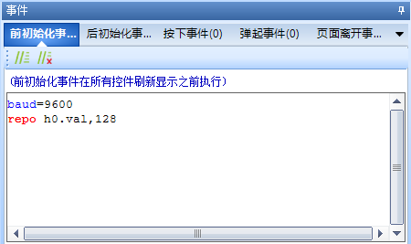

8.事件编辑窗口

如上图所示，串口屏有多种触发事件，每种事件都可以根据情况编写不同的代码。可以根据实际功能需求选择对应的事件类型。
8.1页面事件详解
- 8.1.1 前初始化事件
每次在执行page命令时，在执行页面刷新操作以前，串口屏会自动执行一次《前初始化事件中》的代码。
- 8.1.2 后初始化事件
每次在执行page命令时，在页面刷新操作完成以后，串口屏会自动执行一次《后初始化事件》中的代码。
- 8.1.3 页面按下事件
显示区域内且没有控件的区域，触摸被按下的瞬间，串口屏会自动执行一次页面的《按下事件》中的代码。
- 8.1.4 页面弹起事件
显示区域内且没有控件的区域（以触摸按下是的坐标为准），触摸按下以后松开触摸的的瞬间，串口屏会自动执行一次页面的《弹起事件》中的代码。
- 8.1.5 页面离开事件
每次在执行page切换新的页面前，串口屏会自动执行一次当前页面的《页面离开事件》中的代码。
8.2 控件事件详解
- 8.2.1 控件按下事件
在控件的显示区域内，触摸被按下的瞬间，串口屏在执行完成控件按下状态刷新完成以后，串口屏会自动执行一次控件的《按下事件》中的代码。
- 8.2.2 控件弹起事件
在控件的显示区域内（以触摸按下时的坐标为准），触摸按下以后松开触摸的的瞬间，串口屏在执行完成控件弹起状态刷新完成以后，串口屏会自动执行一次控件的《弹起事件》中的代码。
- 8.2.3 控件滑动事件
在控件的显示区域内（以触摸按下时的坐标为准），触摸按下以后且没有松开的过程中，每次触摸坐标发送改变后，串口屏会自动执行一次控件的《滑动事件》中的代码。
- 8.2.4定时事件
定时器控件特有事件 定时器设定时间到了以后，串口屏会自动执行一次定时器的《定时事件》中的代码。
- 8.2.5播放完成事件
音频控件/视频控件特有控件 视频/动画控件播放完成一次视频文件/动画文件以后，串口屏会自动执行一次控件的《播放完成事件》中的代码。
- 8.2.6发送键值
每个控件按下事件/弹起事件下面都会有发送键值这个选项，如果勾选该选项，点击控件将会串口发送相应的数据，可方便客户设备快速定位是哪个页面中控件发生点击事件，当然客户也可以通过printh加上prints指令来自定义串口发送格式。
发送键值串口发送格式为：
65 pageid obj state ff ff ff
pageid ： 页面id obj ： 控件id state ： 按下或弹起（1或0） 实例1： 65 05 03 01 ff ff ff 页面5 id为3的控件发生按下事件 实例2： 65 07 1c 00 ff ff ff 页面7 id为28的控件发生弹起事件
注意
所以发送数据都是16进制。